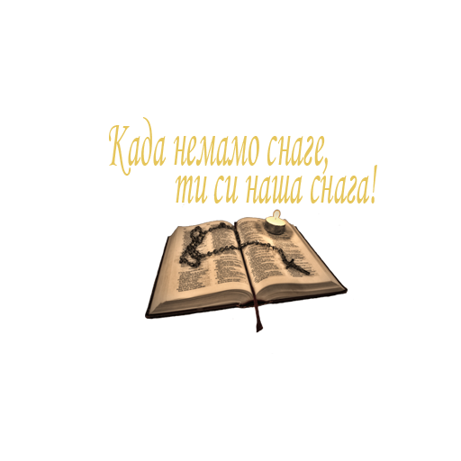

1. А потом изабра Господ и друге, Седамдесеторицу, и посла их два по два пред лицем својим у сваки град и мјесто куда намјераваше сам ићи. 2. И рече им: Жетве је много, а посленика мало: зато се молите господару жетве да изведе посленике на жетву своју. 3. Идите; ево ја вас шаљем као јагањце међу вукове. 4. Не носите кесу ни торбу ни обућу, и никога не поздрављајте на путу. 5. У коју год кућу уђете најприје кажите: Мир дому овоме! 6. И ако буде ондје син мира, остаће на њему мир ваш; ако ли не буде, вратиће се вама. 7. А у тој кући будите, и једите и пијте што у њих има, јер је посленик достојан плате своје; не прелазите из куће у кућу. 8. И у који год град уђете и приме вас, једите што вам се изнесе, 9. И исцјељујте болеснике који су у њему, и говорите им; Приближило вам се Царство Божије. 10. И у који год град уђете и не приме вас, изишавши на тргове његове, реците: 11. И прах што нам је прионуо од града вашега за ноге наше отресамо вам. Али ово знајте да вам се приближило Царство Божије! 12. Кажем вам да ће Содому бити лакше у Дан онај неголи граду томе. 13. Тешко теби, Хоразине! Тешко теби, Витсаидо! Јер да су у Тиру и Сидону била чудеса што су била у вама, давно би се, сједећи у костријети и пепелу, покајали. 14. Али Тиру и Сидону биће лакше на Суду него вама. 15. И ти, Капернауме, који си се до неба подигао, до ада ћеш се сурвати. 16. Ко вас слуша, мене слуша, и ко се вас одриче, мене се одриче; а ко се мене одриче, одриче се Онога који је мене послао. 17. Вратише се пак Седамдесеторица са радошћу говорећи: Господе, и демони нам се покоравају у име твоје. 18. А он им рече: Видјех сатану гдје паде са неба као муња. 19. Ево вам дајем власт да стајете на змије и скорпије и на сву силу вражију, и ништа вам неће наудити. 20. Али се томе не радујте што вам се духови покоравају, него се радујте што су имена ваша написана на небесима. 21. У тај час обрадова се духом Исус и рече: Хвалим те, Оче, Господе неба и земље, што си ово сакрио од мудрих и разборитих, а открио то безазленима. Да, Оче, јер је тако била воља твоја. 22. И окренувши се ученицима рече: Све је мени предао Отац мој, и нико не зна ко је Син, осим Оца, ни ко је Отац, осим Сина, и ако Син хоће коме открити. 23. И окренувши се ученицима насамо рече: Благо очима које виде што ви видите. 24. Јер вам кажем да су многи пророци и цареви жељели видјети што ви видите, и не видјеше; и чути што ви чујете, и не чуше. 25. И гле, законик неки устаде и кушајући га рече: Учитељу, шта ми треба чинити да наслиједим живот вјечни? 26. А он му рече: Шта је написано у Закону? Како читаш? 27. А он одговарајући рече: Љуби Господа Бога својега свим срцем својим, и свом душом својом, и свом снагом својом, и свим умом својим; и ближњега свога као самога себе. 28. А он му рече: Право си одговорио; то чини и живјећеш. 29. А он, желећи себе да оправда, рече Исусу: А ко је ближњи мој? 30. А Исус одговарајући рече: Човјек неки силажаше из Јерусалима у Јерихон, и западе међу разбојнике, и ови га свукоше и ране му зададоше, па одоше, а њега полумртва оставише. 31. Случајно пак силажаше оним путем неки свештеник и видјевши га, прође. 32. А тако и левит, кад је био на оном мјесту, приступивши, погледа га и прође. 33. А Самарјанин неки путујући дође до њега, па кад га видје сажали му се; 34. И приступивши зави му ране и зали уљем и вином; и посадивши га на своје кљусе, доведе га у гостионицу, и постара се око њега. 35. И сутрадан полазећи извади два динара те даде гостионичару, и рече му: Побрини се за њега, а што више потрошиш ја ћу ти платити кад се вратим. 36. Шта мислиш, дакле, који је од оне тројице био ближњи ономе што бјеше запао међу разбојнике? 37. А он рече: Онај који му милост учини. А Исус му рече: Иди, па и ти чини тако. 38. А кад путоваху и он уђе у једно село, а жена нека, по имену Марта, прими га у кућу своју. 39. И у ње бјеше сестра по имену Марија, која сједе код ногу Исусових и слушаше бесједу његову. 40. А Марта се заузела да га што боље услужи, и приступивши му рече: Господе, зар ти не мариш што ме сестра моја остави саму да служим? Реци јој, дакле, да ми помогне. 41. А Исус одговарајући рече јој: Марта, Марта, бринеш се и узнемираваш за много, 42. А само је једно потребно. Али је Марија добри дио изабрала који јој се неће одузети.